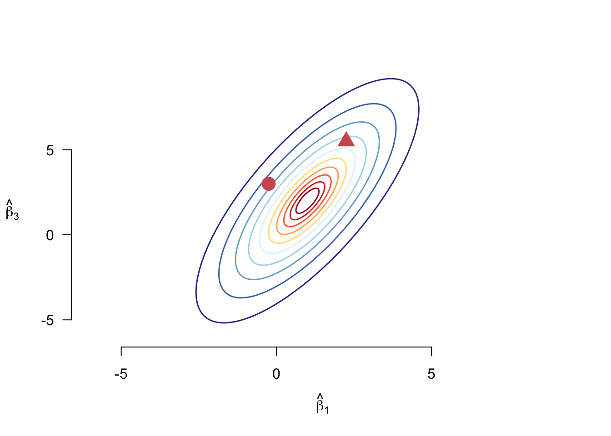

7 The statistics of least squares
In the last chapter, we derived the least squares estimators and investigated many of its mechanical properties. These properties are important for the practical application of OLS, but we should also understand its statistical properties as well, such as the ones described in Part I: unbiasedness, sampling variance, consistency, asymptotic normality. As we saw then, these properties fall into finite-sample (unbiasedness, sampling variance) and asymptotic (consistency, asymptotic normality).
In this chapter, we will focus first on the asymptotic properties of OLS because those properties hold under the fairly mild conditions of the linear projection model introduced in Section 5.2. We will see that OLS consistently estimates a coherent quantity of interest (the best linear predictor) regardless of whether the conditional expectation is linear. That is, for the asymptotic properties of the estimator, we will not need the commonly invoked linearity assumption. Later, when we investigate the finite-sample properties, we will show how linearity will help us establish unbiasedness and how normality of the errors can allow us to conduct exact, finite-sample inference. But these assumptions are very strong and so it’s important to understand what we can say about OLS without making them.
7.1 Large-sample properties of OLS
We begin by setting out the assumptions we will need for establishing the large-sample properties of OLS, which are the same as the assumptions needed to ensure that the best linear predictor, \(\bhat = \E[\X_{i}\X_{i}']^{-1}\E[\X_{i}Y_{i}]\), is well-defined and unique.
Linear projection assumptions
The linear projection model makes the follow assumptions:
\(\{(Y_{i}, \X_{i})\}_{i=1}^n\) are iid random vectors.
\(\E[Y_{i^{2}}] < \infty\) (finite outcome variance)
\(\E[\Vert \X_{i}\Vert^{2}] < \infty\) (finite variances and covariances of covariates)
\(\E[\X_{i}\X_{i}']\) is positive definite (no linear dependence in the covariates)
Recall that these are mild conditions on the joint distribution of \((Y_{i}, \X_{i})\) and in particular, we are not assuming linearity of the CEF, \(\E[Y_{i} \mid \X_{i}]\), nor are we assuming any specific distribution for the data.
We can helpfully decompose the OLS estimator into the true BLP coefficient plus estimation error as \[ \bhat = \left( \frac{1}{n} \sum_{i=1}^n \X_i\X_i' \right)^{-1} \left( \frac{1}{n} \sum_{i=1}^n \X_iY_i \right) = \bfbeta + \underbrace{\left( \frac{1}{n} \sum_{i=1}^n \X_i\X_i' \right)^{-1} \left( \frac{1}{n} \sum_{i=1}^n \X_ie_i \right)}_{\text{estimation error}}. \]
This decomposition will help us quickly establish the consistency of \(\bhat\). By the law of large numbers, we know that sample means will converge in probability to population expectations, so we have \[ \frac{1}{n} \sum_{i=1}^n \X_i\X_i' \inprob \E[\X_i\X_i'] \equiv \mb{Q}_{\X\X} \qquad \frac{1}{n} \sum_{i=1}^n \X_ie_i \inprob \E[\X_{i} e_{i}] = \mb{0}, \] which implies that \[ \bhat \inprob \beta + \mb{Q}_{\X\X}^{-1}\E[\X_ie_i] = \beta, \] by the continuous mapping theorem (the inverse is a continuous function). The linear projection assumptions ensure that LLN applies to these sample means and to ensure that \(\E[\X_{i}\X_{i}']\) is invertible.
Theorem 7.1 Under the above linear projection assumptions, the OLS estimator is consistent for the best linear projection coefficients, \(\bhat \inprob \bfbeta\).
Thus, under fairly mild conditions, OLS should be close to the population linear regression in large samples. Remember, though, that this might not be equal to the conditional expectation if the CEF is nonlinear. What we can say here is that OLS does converge to the best linear approximation to the CEF. Of course, this also means that if the CEF is linear then OLS will consistently estimate the coefficients of the CEF.
Just to emphasize here: the only assumption we made about the dependent variable is that it has finite variance and that it’s iid. Under this assumption it could be continuous, categorical, binary, or event count.
Next, we would like to establish an asymptotic normality result for the OLS coefficients. We first review some key ideas about the central limit theorem.
CLT reminder
Suppose that we have a function of the data iid random vectors \(\X_1, \ldots, \X_n\), \(g(\X_{i})\) where \(\E[g(\X_{i})] = 0\) and so \(\V[g(\X_{i})] = \E[g(\X_{i})g(\X_{i})']\). Then if \(\E[\Vert g(\X_{i})\Vert^{2}] < \infty\), the CLT implies that \[ \sqrt{n}\left(\frac{1}{n} \sum_{i=1}^{n} g(\X_{i}) - \E[g(\X_{i})]\right) = \frac{1}{\sqrt{n}} \sum_{i=1}^{n} g(\X_{i}) \indist \N(0, \E[g(\X_{i})g(\X_{i}')]) \tag{7.1}\]
We now manipulate our decomposition to arrive at the stabilized version of the estimator, \[ \sqrt{n}\left( \bhat - \bfbeta\right) = \left( \frac{1}{n} \sum_{i=1}^n \X_i\X_i' \right)^{-1} \left( \frac{1}{\sqrt{n}} \sum_{i=1}^n \X_ie_i \right). \] We have already established that the first term on the right-hand side will converge in probability to \(\mb{Q}_{\X\X}^{-1}\). Notice that \(\E[\X_{i}e_{i}] = 0\), so we can apply Equation 7.1 to the second term. The covariance matrix of \(\X_ie_{i}\) is \[ \mb{\Omega} = \V[\X_{i}e_{i}] = \E[\X_{i}e_{i}(\X_{i}e_{i})'] = \E[e_{i}^{2}\X_{i}\X_{i}']. \] The CLT will imply that \[ \frac{1}{\sqrt{n}} \sum_{i=1}^n \X_ie_i \indist \N(0, \mb{\Omega}). \] Combining these facts with Slutsky’s Theorem implies the following theorem.
Theorem 7.2 Suppose that the linear projection assumptions hold and, in addition, we have \(\E[Y_{i}^{4}] < \infty\) and \(\E[\lVert\X_{i}\rVert^{4}] < \infty\). Then the OLS estimator is asymptotically normal with \[ \sqrt{n}\left( \bhat - \bfbeta\right) \indist \N(0, \mb{V}_{\bfbeta}), \] where \[ \mb{V}_{\bfbeta} = \mb{Q}_{\X\X}^{-1}\mb{\Omega}\mb{Q}_{\X\X}^{-1} = \left( \E[\X_i\X_i'] \right)^{-1}\E[e_i^2\X_i\X_i']\left( \E[\X_i\X_i'] \right)^{-1}. \]
This means that if the sample size is large enough, we can approximate the distribution of \(\bhat\) with a multivariate normal with mean \(\bfbeta\) and covariance matrix \(\mb{V}_{\bfbeta}/n\). In particular, the square root of the \(j\)th diagonals of this matrix will be standard errors for \(\widehat{\beta}_j\). Knowing the shape of mutlivariate distribution of the OLS estimator is going to allow us to conduct hypothesis tests and generate confidence intervals for both individual coefficients and groups of coefficients. But first, we need an estimate of the covariance matrix!
7.2 Variance estimation for OLS
The asymptotic normality of OLS from the last section is of limited value without some way to estimate the covariance matrix, \[ \mb{V}_{\bfbeta} = \mb{Q}_{\X\X}^{-1}\mb{\Omega}\mb{Q}_{\X\X}^{-1}. \] Given that each of these are population means, this is an ideal place to drop a plug-in estimator. In particular, let’s use the following estimators: \[ \begin{aligned} \mb{Q}_{\X\X} &= \E[\X_{i}\X_{i}'] & \widehat{\mb{Q}}_{\X\X} &= \frac{1}{n} \sum_{i=1}^{n} \X_{i}\X_{i}' = \frac{1}{n}\Xmat'\Xmat \\ \mb{\Omega} &= \E[e_i^2\X_i\X_i'] & \widehat{\mb{\Omega}} & = \frac{1}{n}\sum_{i=1}^n\widehat{e}_i^2\X_i\X_i'. \end{aligned} \] Under the assumptions of Theorem 7.2, the LLN will imply that these are consistent for their targets, \(\widehat{\mb{Q}}_{\X\X} \inprob \mb{Q}_{\X\X}\) and \(\widehat{\mb{\Omega}} \inprob \mb{\Omega}\). We can plug these into the variance formula to arrive at \[ \begin{aligned} \widehat{\mb{V}}_{\bfbeta} &= \widehat{\mb{Q}}_{\X\X}^{-1}\widehat{\mb{\Omega}}\widehat{\mb{Q}}_{\X\X}^{-1} \\ &= \left( \frac{1}{n} \Xmat'\Xmat \right)^{-1} \left( \frac{1}{n} \sum_{i=1}^n\widehat{e}_i^2\X_i\X_i' \right) \left( \frac{1}{n} \Xmat'\Xmat \right)^{-1}, \end{aligned} \] which by the continuous mapping theorem is consistent, \(\widehat{\mb{V}}_{\bfbeta} \inprob \mb{V}_{\bfbeta}\).
This estimator is sometimes called the robust variance estimator or, more accurately, the heteroskedasticity-consistent (HC) variance estimator. How is this robust? Consider the standard homoskedasticity assumption that most statistical software packages make when estimating OLS variances: the variance of the errors does not depend on the covariates: \(\V[e_{i}^{2} \mid \X_{i}] = \V[e_{i}^{2}]\). This is actually stronger than we need and we can rely on a weaker assumption that the squared errors are uncorrelated with a certain function of the covariates: \[
\E[e_{i}^{2}\X_{i}\X_{i}'] = \E[e_{i}^{2}]\E[\X_{i}\X_{i}'] = \sigma^{2}\mb{Q}_{\X\X},
\] where \(\sigma^2\) is the variance of the residuals (since \(\E[e_{i}] = 0\)). Homoskedasticity simplifies the asymptotic variance of the stabilized estimator, \(\sqrt{n}(\bhat - \bfbeta)\), to \[
\mb{V}^{\texttt{lm}}_{\bhat} = \mb{Q}_{\X\X}^{-1}\sigma^{2}\mb{Q}_{\X\X}\mb{Q}_{\X\X}^{-1} = \sigma^2\mb{Q}_{\X\X}^{-1}.
\] We already have an estimator for \(\mb{Q}_{\X\X}\), but we need one for \(\sigma^2\). We can easily use the SSR, \[
\widehat{\sigma}^{2} = \frac{1}{n-k-1} \sum_{i=1}^{n} \widehat{e}_{i}^{2},
\] where we use \(n-k-1\) in the denominator instead of \(n\) to correct for the residuals being slightly less variable than the true errors (because OLS mechanically attempts to make the residuals small). For consitent variance estimation, \(n-k -1\) or \(n\) can both be used, since either way \(\widehat{\sigma}^2 \inprob \sigma^2\). This means that, under homoskedasticity, we have \[
\widehat{\mb{V}}_{\bfbeta}^{\texttt{lm}} = \widehat{\sigma}^{2}\left(\Xmat'\Xmat\right)^{{-1}},
\] which is the standard variance estimator used by lm() in R or reg in Stata.
Now that we have two estimators, \(\widehat{\mb{V}}_{\bfbeta}\) and \(\widehat{\mb{V}}_{\bfbeta}^{\texttt{lm}}\), how do they compare? Notice that the HC variance estimator and the homoskedasticity variance estimator will both be consistent when homoskedasticity holds. But like the “heteroskedasticity-consistent” label implies, only the HC variance estimator will be consistent when homoskedasticity fails to hold. So \(\widehat{\mb{V}}_{\bfbeta}\) has the advantage of being consistent regardless of this assumption. There is a price to be paid, however. When homoskedasticity is correct, \(\widehat{\mb{V}}_{\bfbeta}^{\texttt{lm}}\) incorporates that assumption into the estimator where the HC variance estimator has to estimate it. This means that the HC estimator will have higher variance (the variance estimator will be more variable!) when homoskedasticity actually does hold.
Now that we have established the asymptotic normality of the OLS estimator and developed a consistent estimator of its variance, we can proceed with all of the statistical inference tools we discussed in Part I of this guide. Define the estimated heteroskedasticity-consistent standard errors as \[ \widehat{\se}(\widehat{\beta}_{j}) = \sqrt{\frac{[\widehat{\mb{V}}_{\bfbeta}]_{jj}}{n}}, \] where \([\widehat{\mb{V}}_{\bfbeta}]_{jj}\) is the \(j\)th diagonal entry of the HC variance estimator. Note that we divide by \(\sqrt{n}\) here because \(\widehat{\mb{V}}_{\bfbeta}\) is a consistent estimator of the stabilized estimator \(\sqrt{n}(\bhat - \bfbeta)\) not the estimator itself.
Hypothesis tests and confidence intervals for individual coefficients are almost exactly the same as with the general case presented in Part I. For a two-sided test of \(H_0: \beta_j = b\) versus \(H_1: \beta_j \neq b\), we can build the t-statistic and conclude that, under the null, \[ \frac{\widehat{\beta}_j - b}{\widehat{\se}(\widehat{\beta}_{j})} \indist \N(0, 1). \] Typically, statistical software will helpfully provide the t-statistic for the null of no (partial) linear relationship between \(X_{ij}\) and \(Y_i\), \[ t = \frac{\widehat{\beta}_{j}}{\widehat{\se}(\widehat{\beta}_{j})}, \] which measures how large the estimated coefficient is in standard errors. With a level of \(\alpha = 0.05\), asymptotic normality would imply that we reject this null when \(t > 1.96\). We can form asymptotically-valid confidence intervals with \[ \left[\widehat{\beta}_{j} - z_{\alpha/2}\;\widehat{\se}(\widehat{\beta}_{j}),\;\widehat{\beta}_{j} + z_{\alpha/2}\;\widehat{\se}(\widehat{\beta}_{j})\right]. \] For reasons that we will discuss below, standard software typically relies on the \(t\) distribution instead of the normal for both hypothesis testing and confidence intervals, but this difference is of little consequence in large samples.
7.3 Inference for multiple parameters
With multiple coefficients, we might have hypotheses that involve more than one coefficient. As an example, let’s focus on a regression with an interaction between two covariates, \[ Y_i = \beta_0 + X_i\beta_2 + Z_i\beta_2 + X_iZ_i\beta_3 + e_i. \] Suppose that we wanted to test the hypothesis that \(X_i\) has no effect on the best linear predictor for \(Y_i\). That would be \[ H_{0}: \beta_{1} = 0 \text{ and } \beta_{3} = 0\quad\text{vs}\quad H_{1}: \beta_{1} \neq 0 \text{ or } \beta_{3} \neq 0, \] where we usually write the null more compactly as \(H_0: \beta_1 = \beta_3 = 0\).
To test this null hypothesis, we need a test statistic that discriminates the two hypotheses: it should be large when the alternative is true and small when the null is true. With a single coefficient we usually test the null hypothesis of \(H_0: \beta_j = b_0\) with the \(t\)-statistic, \[ t = \frac{\widehat{\beta}_{j} - b_{0}}{\widehat{\se}(\widehat{\beta}_{j})}, \] and we usually take the absolute value, \(|t|\), as our measure of how far our estimate is from the null. But notice that we could also use the square of the \(t\) statistic, which is \[ t^{2} = \frac{\left(\widehat{\beta}_{j} - b_{0}\right)^{2}}{\V[\widehat{\beta}_{j}]} = \frac{n\left(\widehat{\beta}_{j} - b_{0}\right)^{2}}{[\mb{V}_{\bfbeta}]_[jj]} \tag{7.2}\]
So here’s another way to differentiate the null from the alternative: the squared distance between them divided by the variance of the estimate.
Can we generalize this idea to hypotheses about multiple parameters? It is straightforward to, say, add the sum of squared distances for each component of the null hypothesis. For our interaction example, that would be \[ \widehat{\beta}_1^2 + \widehat{\beta}_3^2, \] but remember that some of the estimated coefficients are noisier than others so we should account for the uncertainty, just like we did for the \(t\)-statistic.
With multiple parameters and multiple coefficients, the variances will now require the use of matrix algebra. We can write any hypothesis about linear functions of the coefficients as \(H_{0}: \mb{L}\bfbeta = \mb{c}\). For example, in the interaction case, we have \[ \mb{L} = \begin{pmatrix} 0 & 1 & 0 & 0 \\ 0 & 0 & 0 & 1 \\ \end{pmatrix} \qquad \mb{c} = \begin{pmatrix} 0 \\ 0 \end{pmatrix} \] Thus, \(\mb{L}\bfbeta = \mb{0}\) is equivalent to \(\beta_1 = 0\) and \(\beta_3 = 0\). Notice that with different \(\mb{L}\) matrices we could represent more complicated hypotheses like \(2\beta_1 - \beta_2 = 34\), though we mostly stick to simpler functions. Let \(\widehat{\bs{\theta}} = \mb{L}\bhat\) be the OLS estimate of the function of the coefficients. By the delta method (discussed in Section 3.9), we have \[ \sqrt{n}\left(\mb{L}\bhat - \mb{L}\bfbeta\right) \indist \N(0, \mb{L}'\mb{V}_{\bfbeta}\mb{L}). \] Using this, we can now create our generalization of the squared \(t\) statistic in Equation 7.2. In particular, we will take the distances \(\mb{L}\bhat - \mb{c}\) weighted by the variance-covariance matrix \(\mb{L}'\mb{V}_{\bfbeta}\mb{L}\), \[ W = n(\mb{L}\bhat - \mb{c})'(\mb{L}'\mb{V}_{\bfbeta}\mb{L})^{-1}(\mb{L}\bhat - \mb{c}), \] which is called the Wald test statistic. This statistic generalizes the ideas of the t-statistic to multiple parameters. With the t-statistic, we recenter to have mean 0 and divide by the standard error to get a variance of 1. If we ignore the middle variance weighting, we have \((\mb{L}\bhat - \mb{c})'(\mb{L}\bhat - \mb{c})\) which is just the sum of the squared deviations of the estimates from the null. Including the \((\mb{L}'\mb{V}_{\bfbeta}\mb{L})^{-1}\) weight has the effect of rescaling the distribution of \(\mb{L}\bhat - \mb{c}\) to make it rotationally symmetric around 0 (so the resulting dimensions are uncorrelated) with each dimension having equal variance of 1. In this way, the Wald statistic transforms the random vectors to be mean-centered and have variance 1 (just the t-statistic), but also to have the resulting random variables in the vector be uncorrelated.1
Why transform the data in this way? Figure 7.1 shows the contour plot of a hypothetical joint distribution of two coefficients from an OLS regression. We might want to know how far different points in the distribution are from the mean, which in this case is \((1, 2)\). Without taking into consideration the joint distribution, the circle is obviously closer to the mean that the triangle. However, looking at where the two points are on the distribution, the circle is at a lower contour than the triangle, meaning it is more extreme than the triangle for this particular distribution. The Wald statistic, then, takes into consideration how much of a “climb” it is for \(\mb{L}\bhat\) to get to \(\mb{c}\) given the the distribution of \(\mb{L}\bhat\).
If \(\mb{L}\) only has one row, then our Wald statistic is the same as the squared \(t\) statistic, \(W = t^2\). This will help us think about the asymptotic distribution of \(W\). Notice that as \(n\to\infty\), we know that by the asymptotic normality of \(\bhat\), \[ t = \frac{\widehat{\beta}_{j} - \beta_{j}}{\widehat{\se}[\widehat{\beta}_{j}]} \indist \N(0,1) \] so \(t^2\) will converge in distribution to a \(\chi^2_1\) (since a \(\chi^2_1\) is just one standard normal squared). After recentering ad rescaling by the covariance matrix, \(W\) converges to the sum of \(q\) squared independent normals, where \(q\) is the number of rows of \(\mb{L}\), or equivalently, the number of restrictions implied by the null hypothesis. Thus, under the null hypothesis of \(\mb{L}\bhat = \mb{c}\), we have \(W \indist \chi^2_{q}\).
Chi-squared critical values
We can obtain critical values for the \(\chi^2_q\) distribution using the qchisq() function in R. For example, if we wanted to obtain the critical value \(w\) that such that \(\P(W > w_{\alpha}) = \alpha\) for our two parameter interaction example, we could use:
qchisq(p = 0.95, df = 2)[1] 5.991465To use the Wald statistic in a test, we need to define the rejection region. Because we are squaring each distance in \(W \geq 0\) and larger values of \(W\) indicate more disagreement with the null in either direction. Thus, for an \(\alpha\)-level test of the joint null, we only need a one-sided rejection region of the form \(\P(W > w_{\alpha}) = \alpha\). Obtaining these values is straightforward (see the above callout tip). For \(q = 2\) and a \(\alpha = 0.05\), the critical value is roughly 6.
The Wald statistic is not a common test provided by standard statistical software functions like lm() in R, though it is fairly straightforward to implement “by hand.” Alternatively, packages like {aod} or {clubSandwich} have implementations of the test. What is reported by most software implementations of OLS (like lm() in R) is the F-statistic, which is \[
F = \frac{W}{q},
\] which also typically uses the the homoskedastic variance estimator \(\mb{V}^{\texttt{lm}}_{\bfbeta}\) in \(W\). The p-values reported for such tests use the \(F_{q,n-k-1}\) distribution because this is the exact distribution of the \(F\) statistic when the errors are (a) homoskedastic and (b) normally distributed. When these assumptions do not hold, the \(F\) distribution is not really statistically justified, but it is slightly more conservative than the \(\chi^2_q\) distribution and the inference will converge as \(n\to\infty\). So it might be justified as an ad hoc small sample adjustment to the Wald test. For example, if we used the \(F_{q,n-k-1}\) with the interaction example where \(q=2\) and say we have a sample size of \(n = 100\). In that case the critical value for the F test with \(\alpha = 0.05\) is
qf(0.95, df1 = 2, df2 = 100 - 4)[1] 3.091191which equates to a critical value of 6.182 on the scale of the Wald statistic (multiplying it by \(q = 2\)). Compared to the earlier critical value of 5.991 based on the \(\chi^2_2\) distribution, we can see that the inferences will be very similar even in moderately-sized datasets.
Finally, note that the F-statistic reported by lm() in R is the test of all the coefficients except the intercept being 0. In modern quantitative social sciences, this is almost never a substantively interesting test.
7.4 Finite-sample properties with a linear CEF
All of the results above have been large-sample properties and we have not addressed finite-sample properties like the sampling variance or unbiasedness. Actually, under the linear projection assumption above, OLS is generally biased without stronger assumptions. In this section, we introduce the stronger assumption that will allow us to establish stronger properties for OLS. As usual, however, remember that these stronger assumption can be wrong.
Assumption: Linear Regression Model
The variables \((Y_{i}, \X_{i})\) satisfy the linear CEF assumption. \[ \begin{aligned} Y_{i} &= \X_{i}'\bfbeta + e_{i} \\ \E[e_{i}\mid \X_{i}] & = 0. \end{aligned} \]
The design matrix is invertible \(\E[\X_{i}\X_{i}'] > 0\) (positive definite).
We discussed the concept of a linear CEF extensively in Chapter 5, but recall that the CEF might be linear mechanically if the model is saturated, or when there are as many coefficients in the model as there are unique values of \(\X_i\). When a model is not saturated, the linear CEF assumption is just that: an assumption. What can this assumption do? It can actually establish quite a few nice statistical properties in finite samples.
One note before we proceed. When focusing on the finite sample inference for OLS, it is customary to focus on its properties conditional on the observed covariates, such as \(\E[\bhat \mid \Xmat]\) or \(\V[\bhat \mid \Xmat]\). The historical reason for this was because these independent variable were often chosen by the researcher and not really random at all. Thus, in some older texts, you’ll sometimes see \(\Xmat\) treated as “fixed” and might even omit any explicit conditioning statements.
Theorem 7.3 Under the linear regression model assumption, OLS is unbiased for the population regression coefficients, \[ \E[\bhat \mid \Xmat] = \bfbeta, \] and its conditional sampling variance issue \[ \mb{\V}_{\bhat} = \V[\bhat \mid \Xmat] = \left( \Xmat'\Xmat \right)^{-1}\left( \sum_{i=1}^n \sigma^2_i \X_i\X_i' \right) \left( \Xmat'\Xmat \right)^{-1}, \] where \(\sigma^2_{i} = \E[e_{i}^{2} \mid \Xmat]\).
Proof. To prove the conditional unbiasedness, recall that we can write the OLS estimator as \[ \bhat = \bfbeta + (\Xmat'\Xmat)^{-1}\Xmat'\mb{e}, \] and so taking (conditional) expectations, we have, \[ \E[\bhat \mid \Xmat] = \bfbeta + \E[(\Xmat'\Xmat)^{-1}\Xmat'\mb{e} \mid \Xmat] = \bfbeta + (\Xmat'\Xmat)^{-1}\Xmat'\E[\mb{e} \mid \Xmat] = \bfbeta, \] because under the linear CEF assumption \(\E[\mb{e}\mid \Xmat] = 0\).
For the conditional sampling variance, we can use the same decomposition we have, \[ \V[\bhat \mid \Xmat] = \V[\bfbeta + (\Xmat'\Xmat)^{-1}\Xmat'\mb{e} \mid \Xmat] = (\Xmat'\Xmat)^{-1}\Xmat'\V[\mb{e} \mid \Xmat]\Xmat(\Xmat'\Xmat)^{-1}. \] Since \(\E[\mb{e}\mid \Xmat] = 0\), we know that \(\V[\mb{e}\mid \Xmat] = \E[\mb{ee}' \mid \Xmat]\), which is a matrix with diagonal entries \(\E[e_{i}^{2} \mid \Xmat] = \sigma^2_i\) and off-diagonal entries \(\E[e_{i}e_{j} \Xmat] = \E[e_{i}\mid \Xmat]\E[e_{j}\mid\Xmat] = 0\), where the first equality follows from the independence of the errors across units. Thus, \(\V[\mb{e} \mid \Xmat]\) is a diagonal matrix with \(\sigma^2_i\) along the diagonal, which means \[ \Xmat'\V[\mb{e} \mid \Xmat]\Xmat = \sum_{i=1}^n \sigma^2_i \X_i\X_i', \] establishing the conditional sampling variance.
Thus, for any realization of the covariates, \(\Xmat\), OLS is unbiased for the true regression coefficients \(\bfbeta\). By the law of iterated expectation, we also know that it is unconditionally unbiased2 as well since \[ \E[\bhat] = \E[\E[\bhat \mid \Xmat]] = \bfbeta. \] The difference between these two statements usually isn’t incredibly meaningful.
There are a lot of variances flying around, so it’s helpful to review them. Above, we derived the asymptotic variance of \(\mb{Z}_{n} = \sqrt{n}(\bhat - \bfbeta)\), \[
\mb{V}_{\bfbeta} = \left( \E[\X_i\X_i'] \right)^{-1}\E[e_i^2\X_i\X_i']\left( \E[\X_i\X_i'] \right)^{-1},
\] which implies that the approximate variance of \(\bhat\) will be \(\mb{V}_{\bfbeta} / n\) because \[
\bhat = \frac{Z_n}{\sqrt{n}} + \bfbeta \quad\implies\quad \bhat \overset{a}{\sim} \N(\bfbeta, n^{-1}\mb{V}_{\bfbeta}),
\] where \(\overset{a}{\sim}\) means approximately asymptotically distributed as. Under the linear CEF, the conditional sampling variance of \(\bhat\) has a similar form and will be similar to the
\[
\mb{V}_{\bhat} = \left( \Xmat'\Xmat \right)^{-1}\left( \sum_{i=1}^n \sigma^2_i \X_i\X_i' \right) \left( \Xmat'\Xmat \right)^{-1} \approx \mb{V}_{\bfbeta} / n
\] In practice, these two derivations lead to basically the same variance estimator. Recall the heteroskedastic-consistent variance estimator is \[
\widehat{\mb{V}}_{\bfbeta} = \left( \frac{1}{n} \Xmat'\Xmat \right)^{-1} \left( \frac{1}{n} \sum_{i=1}^n\widehat{e}_i^2\X_i\X_i' \right) \left( \frac{1}{n} \Xmat'\Xmat \right)^{-1},
\] is basically a valid plug-in estimator for the asymptotic variance and \[
\widehat{\mb{V}}_{\bhat} = n^{-1}\widehat{\mb{V}}_{\bfbeta}.
\] Thus, in practice, the asymptotic results and the finite-sample results under a linear CEF both justify the same variance estimator.
7.4.1 Linear CEF model under homoskedasticity
If we are willing to make a homoskedasticity assumption on the errors, we can derive even stronger results for OLS. This makese sense: stronger assumptions typically lead to stronger conclusions, but those conclusions may not be robust to violations of the assumption. But homoskedasticity is such a historically important assumption that statistical software implementations of OLS like lm() in R assume it.
Assumption: Homoskedasticity with a linear CEF
In addition the linear CEF assumption, we further assume that \[ \E[e_i^2 \mid \X_i] = \E[e_i^2] = \sigma^2, \] or that variance of the errors does not depend on the covariates.
Theorem 7.4 Under a linear CEF model with homoskedastic errors, the conditional sampling variance is \[ \mb{V}^{\texttt{lm}}_{\bhat} = \V[\bhat \mid \Xmat] = \sigma^2 \left( \Xmat'\Xmat \right)^{-1}, \] and the variance estimator \[ \widehat{\mb{V}}^{\texttt{lm}}_{\bhat} = \widehat{\sigma}^2 \left( \Xmat'\Xmat \right)^{-1} \quad\text{where,}\quad \widehat{\sigma}^2 = \frac{1}{n - k - 1} \sum_{i=1}^n \widehat{e}_i^2 \] is unbiased, \(\E[\widehat{\mb{V}}^{\texttt{lm}}_{\bhat} \mid \Xmat] = \mb{V}^{\texttt{lm}}_{\bhat}\).
Proof. Under homoskedasticity \(\sigma^2_i = \sigma^2\) for all \(i\). Recall that \(\sum_{i=1}^n \X_i\X_i' = \Xmat'\Xmat\) Thus, the conditional sampling variance from Theorem 7.3, \[ \begin{aligned} \V[\bhat \mid \Xmat] &= \left( \Xmat'\Xmat \right)^{-1}\left( \sum_{i=1}^n \sigma^2 \X_i\X_i' \right) \left( \Xmat'\Xmat \right)^{-1} \\ &= \sigma^2\left( \Xmat'\Xmat \right)^{-1}\left( \sum_{i=1}^n \X_i\X_i' \right) \left( \Xmat'\Xmat \right)^{-1} \\&= \sigma^2\left( \Xmat'\Xmat \right)^{-1}\left( \Xmat'\Xmat \right) \left( \Xmat'\Xmat \right)^{-1} \\&= \sigma^2\left( \Xmat'\Xmat \right)^{-1} = \mb{V}^{\texttt{lm}}_{\bhat}. \end{aligned} \]
For the unbiasedness, we just need to show that \(\E[\widehat{\sigma}^{2} \mid \Xmat] = \sigma^2\). Recall that we defined \(\mb{M}_{\Xmat}\) as the residual-maker because \(\mb{M}_{\Xmat}\mb{Y} = \widehat{\mb{e}}\). We can use this to connect the residuals to the errors, \[ \mb{M}_{\Xmat}\mb{e} = \mb{M}_{\Xmat}\mb{Y} - \mb{M}_{\Xmat}\Xmat\bfbeta = \mb{M}_{\Xmat}\mb{Y} = \widehat{\mb{e}}, \] so \[ \V[\widehat{\mb{e}} \mid \Xmat] = \mb{M}_{\Xmat}\V[\mb{e} \mid \Xmat] = \mb{M}_{\Xmat}\sigma^2, \] where the first equality is because \(\mb{M}_{\Xmat} = \mb{I}_{n} - \Xmat (\Xmat'\Xmat)^{-1} \Xmat'\) is constant conditional on \(\Xmat\). Notice that the diagonal entries of this matrix are the variances of particular residuals \(\widehat{e}_i\) and that the diagonal entries of the annihilator matrix are \(1 - h_{ii}\) (since the \(h_{ii}\) are the diagonal entries of \(\mb{P}_{\Xmat}\)). Thus, we have \[ \V[\widehat{e}_i \mid \Xmat] = \E[\widehat{e}_{i}^{2} \mid \Xmat] = (1 - h_{ii})\sigma^{2}. \] In the last chapter we established one property of these leverage values in Section 6.9.1 is that \(\sum_{i=1}^n h_{ii} = k+ 1\), so \(\sum_{i=1}^n 1- h_{ii} = n - k - 1\) and we have \[ \begin{aligned} \E[\widehat{\sigma}^{2} \mid \Xmat] &= \frac{1}{n-k-1} \sum_{i=1}^{n} \E[\widehat{e}_{i}^{2} \mid \Xmat] \\ &= \frac{\sigma^{2}}{n-k-1} \sum_{i=1}^{n} 1 - h_{ii} \\ &= \sigma^{2} \end{aligned} \] This establishes \(\E[\widehat{\mb{V}}^{\texttt{lm}}_{\bhat} \mid \Xmat] = \mb{V}^{\texttt{lm}}_{\bhat}\).
Thus, under the linear CEF model and homoskedasticity of the errors, we have an unbiased variance estimator that is a simple function of the sum of squared residuals and the design matrix. In most statistical software packages, estimated standard errors are derived from \(\widehat{\mb{V}}^{\texttt{lm}}_{\bhat}\).
The final result that we can derive for the linear CEF under homoskedasticity is an optimality result. We might ask ourselves if there is another estimator for \(\bfbeta\) that would outperform OLS in the sense of having lower sampling variance. Turns out there is no linear estimator for \(\bfbeta\) that has lower conditional variance, meaning that OLS is the best linear unbiased estimator, often jovially shortened to BLUE. This result is famously known as the Gauss-Markov Theorem.
Theorem 7.5 Let \(\widetilde{\bfbeta} = \mb{AY}\) be a linear and unbiased estimator for \(\bfbeta\). Under the linear CEF model with homoskedastic errors, \[ \V[\widetilde{\bfbeta}\mid \Xmat] \geq \V[\bhat \mid \Xmat]. \]
Proof. Note that if \(\widetilde{\bfbeta}\) is unbiased then \(\E[\widetilde{\bfbeta} \mid \Xmat] = \bfbeta\) and so \[ \bfbeta = \E[\mb{AY} \mid \Xmat] = \mb{A}\E[\mb{Y} \mid \Xmat] = \mb{A}\Xmat\bfbeta, \] which implies that \(\mb{A}\Xmat = \mb{I}_n\). Rewrite the competitor as \(\widetilde{\bfbeta} = \bhat + \mb{BY}\) where, \[ \mb{B} = \mb{A} - \left(\Xmat'\Xmat\right)^{-1}\Xmat'. \] and note that \(\mb{A}\Xmat = \mb{I}_n\) implies that \(\mb{B}\Xmat = 0\). We now we have \[ \begin{aligned} \widetilde{\bfbeta} &= \left( \left(\Xmat'\Xmat\right)^{-1}\Xmat' + \mb{B}\right)\mb{Y} \\ &= \left( \left(\Xmat'\Xmat\right)^{-1}\Xmat' + \mb{B}\right)\Xmat\bfbeta + \left( \left(\Xmat'\Xmat\right)^{-1}\Xmat' + \mb{B}\right)\mb{e} \\ &= \bfbeta + \mb{B}\Xmat\bfbeta + \left( \left(\Xmat'\Xmat\right)^{-1}\Xmat' + \mb{B}\right)\mb{e} \\ &= \bfbeta + \left( \left(\Xmat'\Xmat\right)^{-1}\Xmat' + \mb{B}\right)\mb{e} \end{aligned} \] The variance of the competitor is thus, \[ \begin{aligned} \V[\widetilde{\bfbeta} \mid \Xmat] &= \left( \left(\Xmat'\Xmat\right)^{-1}\Xmat' + \mb{B}\right)\V[\mb{e}\mid \Xmat]\left( \left(\Xmat'\Xmat\right)^{-1}\Xmat' + \mb{B}\right)' \\ &= \sigma^{2}\left( \left(\Xmat'\Xmat\right)^{-1}\Xmat' + \mb{B}\right)\left( \Xmat\left(\Xmat'\Xmat\right)^{-1} + \mb{B}'\right) \\ &= \sigma^{2}\left(\left(\Xmat'\Xmat\right)^{-1}\Xmat'\Xmat\left(\Xmat'\Xmat\right)^{-1} + \left(\Xmat'\Xmat\right)^{-1}\Xmat'\mb{B}' + \mb{B}\Xmat\left(\Xmat'\Xmat\right)^{-1} + \mb{BB}'\right)\\ &= \sigma^{2}\left(\left(\Xmat'\Xmat\right)^{-1} + \mb{BB}'\right)\\ &\geq \sigma^{2}\left(\Xmat'\Xmat\right)^{-1} \\ &= \V[\bhat \mid \Xmat] \end{aligned} \] The first equality comes from the properties of covariance matrics; the second equality is due to homoskedasticity; the fourth is due \(\mb{B}\Xmat = 0\) which implies that \(\Xmat'\mb{B}' = 0\) as well. The fifth inequality holds because matrix products of the form \(\mb{BB}'\) are positive definite if \(\mb{B}\) is of full rank (which we have assumed it is).
In this proof, we saw that the variance of the competing estimator had variance \(\sigma^2\left(\left(\Xmat'\Xmat\right)^{-1} + \mb{BB}'\right)\) which we argued was “greater than 0” in the matrix sense, which is also called positive definite. What does this mean practically? Remember that any positive definite matrix must have strictly positive diagonal entries and that the diagonal entries of \(\V[\bhat \mid \Xmat]\) and \(V[\widetilde{\bfbeta}\mid \Xmat]\) are the variances of the individuals parameters, \(\V[\widehat{\beta}_{j} \mid \Xmat]\) and \(\V[\widetilde{\beta}_{j} \mid \Xmat]\). This means that the variances of the individual parameters will be greater for \(\widetilde{\bfbeta}\) than for \(\bhat\).
The Gauss-Markov is often cited as a key advantage of OLS over other methods, but it’s important to recognize its limitations. It requires both the linearity assumption and the homoskedastic errors assumption, both of which can be false in many applications.
Finally, note that while we have shown this result for linear estimators, Hansen (2022) proves a more general version of this that result that applies to any unbiased estimator.
7.5 The normal linear model
Finally, we add the strongest and thus least loved of the classical linear regression assumption: (conditional) normality of the errors. The historical reason to use this assumption was that finite-sample inference hits a roadblock without some knowledge of the sampling distribution of \(\bhat\). Under the linear CEF model, we saw that it was unbiased and under homoskedasticity we were able to produce an unbiased estimator of the conditional variance. But in order to do hypothesis testing or confidence intervals, we need to be able to make probability statements about the estimator and for that we need to know its exact distribution. Obviously, when the sample size is large, we can rely on the CLT and know that it is approximately normal. But in small samples, what do we do? Historically, we decided to just assume (conditional) normality of the errors to proceed with some knowledge that we were wrong but hopefully not too wrong.
The normal linear regression model
In addition to the linear CEF assumption, we assume that \[ e_i \mid \Xmat \sim \N(0, \sigma^2). \]
A couple of things to point out:
- The assumption here is not that \((Y_{i}, \X_{i})\) are jointly normal (though this would be sufficient for the assumption to hold), but rather that \(Y_i\) is normally distributed conditional on \(\X_i\).
- Notice that the normal regression model has the homoskedasticity assumption baked in.
Theorem 7.6 Under the normal linear regression model, we have \[ \begin{aligned} \bhat \mid \Xmat &\sim \N\left(\bfbeta, \sigma^{2}\left(\Xmat'\Xmat\right)^{-1}\right) \\ \frac{\widehat{\beta}_{j} - \beta_{j}}{[\widehat{\mb{V}}^{\texttt{lm}}_{\bhat}]_{jj}/\sqrt{n}} &\sim t_{n-k-1} \\ W/q &\sim F_{q, n-k-1}. \end{aligned} \]
This theorem says that in the normal linear regression model the coefficients are normally distributed, the t-statistics are \(t\)-distributed, and a transformation of the Wald statistic follows an \(F\) distributed. Note that all of these are exact results and do not rely on any large-sample approximation. Under the assumption of conditional normality of the errors, they are as valid for \(n = 5\) as they are for \(n = 500,000\).
Almost no one believes any errors are normally distributed, so why even present these results? Unfortunately, most statistical software implementations of OLS make implicitly make this assumption when calculating p-values for tests or constructing confidence intervals. That is, the p-value associated with the \(t\)-statistic that lm() outputs in R is based on the \(t_{n-k-1}\) distribution and the critical values use to construct confidence intervals with confint() uses that distribution as well. When normality does not hold, there is no principled reason to use the \(t\) or the \(F\) distributions in this way. But we might hold our nose and use this ad hoc procedure under two rationalizations:
- \(\bhat\) is asymptotically normal, but in smaller finite samples this approximation might be poor. The \(t\) distribution will make inference more conservative in these cases (wider confidence intervals, smaller test rejection regions) and this might help to offset the poor approximation of the normal in small samples.
- As \(n\to\infty\), the \(t_{n-k-1}\) will converge to a standard normal distribution, so the ad hoc adjustment will not matter much for medium to large samples.
This isn’t a very convincing argument since it’s not clear that the \(t\) approximation will be any better than the normal in finite samples. But it’s the best we can do to console ourselves as we go find more data.
The form of the Wald statistic is that of a weighted inner product, \(\mb{x}'\mb{Ay}\), where \(\mb{A}\) is a symmetric positive-definite weighting matrix.↩︎
We are basically ignoring some edge cases when it comes to discrete covariates here. In particular, we are assuming that \(\Xmat'\Xmat\) is nonsingular with probability one, though this can fail if we have a binary covariate since there is some chance (however small) that the entire column will be all ones or all zeros. This would lead to a singular matrix \(\Xmat'\Xmat\). Practically this is not a big deal but it does mean that we have to basically ignore this issue theoretically or just focus on conditional unbiasedness.↩︎